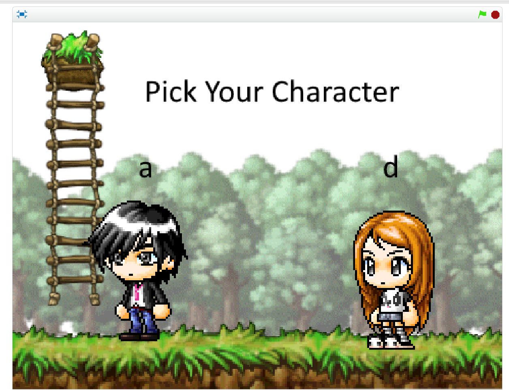

Here is the first of the projects. This is a little dog floating across the blue screen of death.
The second is a a life message on how one should treat their lovers and left overs.
Here is My replit prject only meant for Mr.Rods eyes only.Mr pitman can look at it too. My partner was Brandon Demessa
This is Our spin on Egyptian War (By Spencer Wright and Nick Shefler)
This is a data project showing the correlation between video games and violent crimes. By Stella lin and Spencer Wright